个人信息修改
个人信息修改环境监控
60天
|
| 空气温度 20.9° |
空气湿度
 15.1%
15.1%
|
空气露点 16.4° | 土壤温度 15.1° | 土壤水分  209ppm | 二氧化碳 209ppm | 光照 7365olux | EC值 EC 0.7ms/cm | PH值 PH 7.0 |
操作控制
欢迎使用LED屏
当前温度：20.6℃ 湿度：48.2%

环境实况
气象观测方法-气温：气温是地面气象观测规定高度上的空气温度温度温度更多>>
病虫害预警
病虫害预警：病虫害预警是指在作物生长过程中...更多>>
成熟度预测
成熟度预测：成熟度预测是作物在生长周期...更多>>